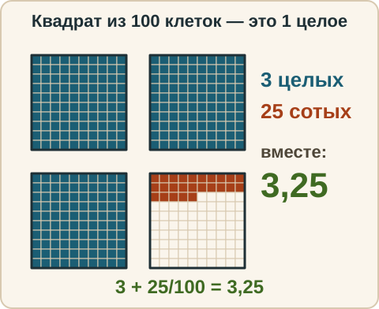
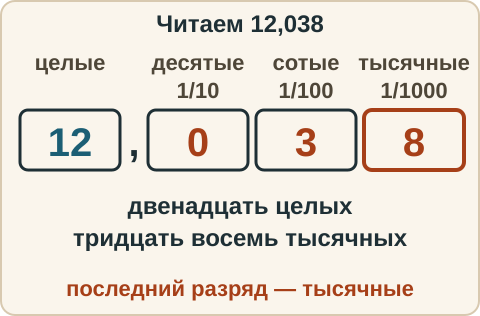
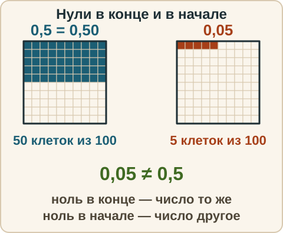
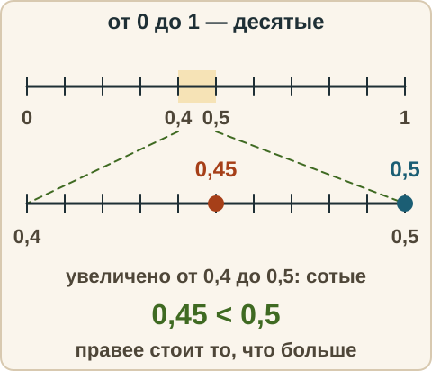
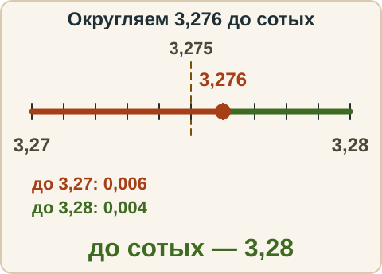
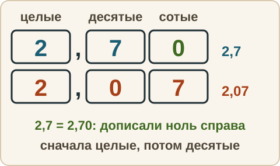
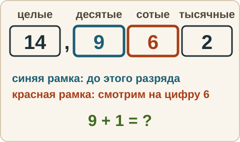

Математика: база · занятие 9Десятичные дроби
Цель: ты читаешь и записываешь десятичные дроби, сравниваешь их по разрядам и округляешь до нужного разряда. Смесь сегодня — недельный срез по неделе 3. Ответы и подсказки спрятаны: сначала реши сам, потом нажми кнопку.
Как записывать ответ. Число — целое число. Дробь — через черту и сокращённая до конца, например 3/4. Смешанное число — целая часть, пробел, дробь, например 2 3/4. Десятичная дробь — с запятой, например 3,25. Знак — один символ: <, > или =. Несколько чисел — через точку с запятой, например 0,1; 0,25.
Вспомнить
Без подсказок, сразу проверка. Отмечай, на чём споткнулся, — в журнал.
- 4/9 : 2/3
- Найди 3/5 от 35.
- 2/7 · 21/10
- 5/6 + 3/10
- 7/12 − 1/3
- (−5) · (−9)
Беглость: дробь в десятичную
Игра «дробь в десятичную». Запиши обыкновенную дробь десятичной. Если не помнишь, приведи к знаменателю 10 или 100: например, 4/5 = 8/10 = 0,8. Ошибся — попробуй ещё раз. Без таймера.
- Запиши 1/2 десятичной дробью.
- Запиши 1/4 десятичной дробью.
- Запиши 3/4 десятичной дробью.
- Запиши 1/5 десятичной дробью.
- Запиши 3/10 десятичной дробью.
- Запиши 7/100 десятичной дробью.
- Запиши 9/20 десятичной дробью.
Правило
Десятичная дробь — запись числа со знаменателем 10, 100, 1000 и так далее, где знаменатель не пишут, а показывают положением цифр после запятой. Запятая отделяет целую часть от дробной. После запятой идут разряды: первая цифра — десятые (доли 1/10), вторая — сотые (1/100), третья — тысячные (1/1000).
3,25 = 3 + 2/10 + 5/100 = 3 + 25/100 (три целых и двадцать пять сотых).

Как читать. Читаем целую часть, слово «целых», затем дробную часть как число, и называем последний разряд: 12,038 — «двенадцать целых тридцать восемь тысячных». Если целая часть равна 0, слово «целых» опускаем: 0,7 — «семь десятых».

Как записывать. «Восемь целых пять тысячных». Разрядов после запятой три (тысячные), значит дробная часть из трёх цифр: 005. Пустые разряды заполняем нулями. Запись: 8,005.
- Нули в конце дробной части ничего не меняют: 0,5 = 0,50 = 0,500.
- Нули в начале дробной части (сразу после запятой) меняют число: 0,05 ≠ 0,5.

Сравнение. 1) Сначала сравниваем целые части. 2) Если они равны, сравниваем цифры поразрядно слева направо, начиная с десятых. Удобно дописать нули справа, чтобы дробные части были одной длины. Первый разряд, где цифры разные, решает.

Округление. Чтобы округлить до нужного разряда, смотрим на следующую цифру справа. Если она 0, 1, 2, 3, 4 — цифру разряда оставляем. Если 5, 6, 7, 8, 9 — увеличиваем цифру разряда на 1. Всё, что правее, отбрасываем. Это школьное правило округления, его применяют в ОГЭ.

Разобранный пример
А. Запиши цифрами «семь целых девять тысячных».
- Тысячные: после запятой три цифры. Девять тысячных = 009.
- Ответ: 7,009.
Б. Сравни 0,45 и 0,5.
- Дописываем ноль: 0,45 и 0,50.
- Целые равны (0). Десятые: 4 и 5. 4 < 5, значит 0,45 < 0,5.
- Ответ: 0,45 < 0,5.
В. Округли 3,276 до сотых, до десятых и до целых.
- До сотых: третья цифра 6 (≥ 5), вторая цифра увеличивается: 3,28.
- До десятых: вторая цифра 7 (≥ 5), первая увеличивается: 3,3.
- До целых: первая цифра после запятой 2 (< 5), целую часть оставляем: 3.
- Ответ: 3,28; 3,3; 3.
С подсказкой
Решай сам. Подсказку открывай, только если застрял.
- Сравни 2,7 и 2,07.
- Округли 14,962 до десятых.


Сам
Десятичные дроби записывай с запятой. Два раза не сошлось — появится кнопка «Показать решение».
- Запиши цифрами: «четыре целых три сотых».
- Запиши 0,6 обыкновенной дробью.
- Знак: 3,09 и 3,1.
- Расположи по возрастанию: 0,6; 0,06; 0,66; 0,606.
- Округли 5,486 до сотых.
- Округли 7,96 до десятых.
Ловушка
Ловушка. «0,45 больше 0,5, потому что 45 больше 5». Это сравнение дробной части как обычных целых чисел. Но 0,45 — это 45 сотых, а 0,5 — это 5 десятых = 50 сотых. Всегда выравнивай количество знаков после запятой, дописывая нули справа. Проверь себя: у обоих чисел одинаковое число цифр после запятой?
Смесь — недельный срез
Вперемешку: дроби, десятичные, округление, знаки, порядок действий. Это итог недели: 10 заданий. Результат смотри в строке «Верно: N из 10» под заданиями.
- 3/4 · 2/9
- 5/6 : 10/9
- 2 1/3 − 1 1/2
- Что больше: 0,38 или 0,4?
- Округли 12,847 до десятых.
- Найди 5/8 от 72.
- Запиши 7/100 десятичной дробью.
- 4 : 2/3
- 50 − 36 : 6 · 2
- Запиши 0,3 обыкновенной дробью.
Журнал
Запиши 1–3 строки: «что перепутал → как проверить». Пример формы: «сравнил дробные части как целые числа → дописываю нули справа и сравниваю по разрядам». Там же отметь результат смеси из строки «Верно: N из 10».
- …